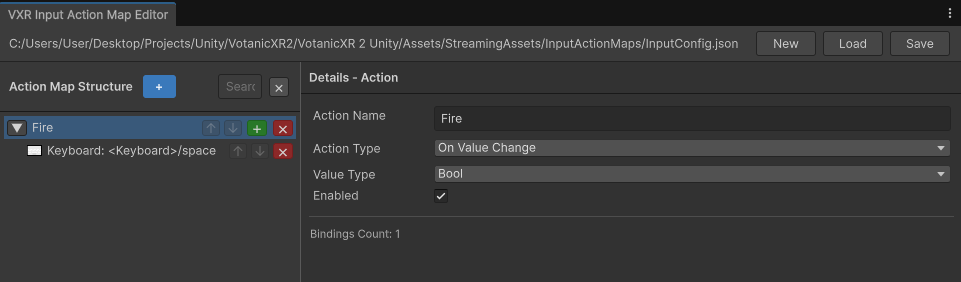

Link up action to in-code methods
This section explains how to connect actions defined in the Input Action Map Editor to your XR game logic using the VXRActionBinding class. By utilizing this class, you can bind specific in-code methods to input actions, enabling your scripts to automatically listen for and respond whenever those actions are triggered in runtime.
To link an action to in-code method, follow these steps:
- Set up an action in the Input Action Map Editor
- Initialize a
VXRActionBindingusing the exact action name from the editor and bind the action to a compatible method - Set the
.Boundproperty of the binding totrueto activate it
Code example: Call method on every button press
Before you begin to write the script, you must define an action within the Input Action Map Editor. Open the editor via VXR Input > Action Map Editor, create the action and save the changes to the action map.

The following script demonstrates the implementation pattern for linking a "Fire" action to print a custom debug message.
using UnityEngine;
using Votanic.VXR2.Core.Input;
public class SampleGunObject : MonoBehaviour
{
// Action name defined in the input action map editor
private readonly string fireActionName = "Fire";
// Action binding
private VXRActionBinding<bool> _fireAction;
IEnumerator Start()
{
yield return new WaitUntil(() => VXRObjectManager.Instance.Initialized);
// Initialize an action binding
_fireAction = new VXRActionBinding<bool>(fireActionName, OnFireAction);
}
// Enable / disable / dispose the action binding to reduce cost from input manager
void OnEnable()
{
if (_fireAction != null) _fireAction.Bound = true;
}
void OnDisable()
{
if (_fireAction != null) _fireAction.Bound = false;
}
void OnDestroy()
{
if (_fireAction != null) _fireAction.Dispose();
}
// Implement method
private void OnFireAction(bool isPressed)
{
if (isPressed)
{
Debug.Log("Fire action: button pressed");
}
else
{
Debug.Log("Fire action: button released");
}
}
}